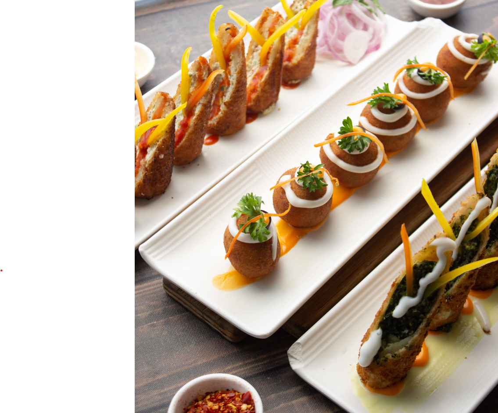

Indian, Asian, Italian, Mexican, chaat, desserts, banquets and catering - served from one trusted pure-veg kitchen.
Get directions, reserve a table, order online, or use the outlet contact options.
From North Indian classics to pizza, pasta, Asian favourites, chaat and desserts, everyone at the table gets a clear choice.
Pick the closest Rasoiya Street outlet for directions, reservations or delivery links.
Host celebrations, office meals and family functions with pure-veg menus from the Rasoiya Street kitchen.
In 1990, Leela Gupta's family story began with a restaurant in Mount Abu. In 2016, that promise became The Rasoiya Street in Bengaluru - a pure-veg kitchen built on care, consistency and variety.
Read the full storySee what guests are saying about their nearest Rasoiya Street outlet on Google.